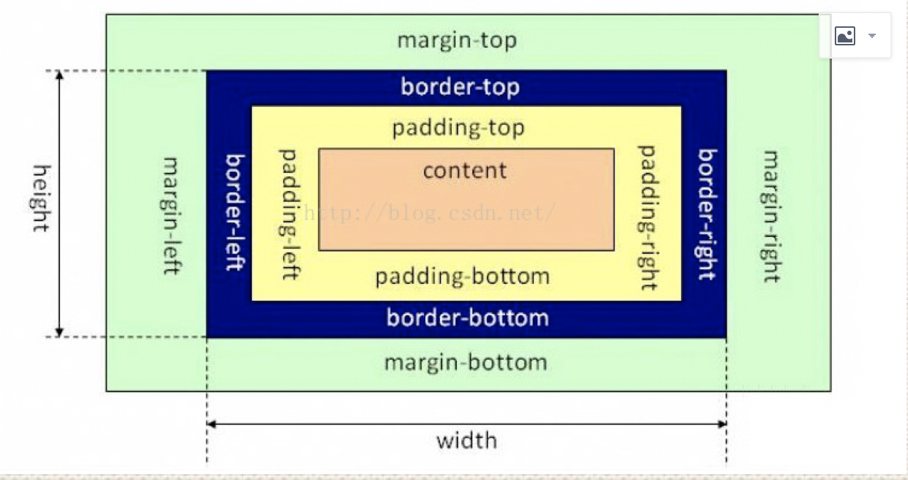

HTML & CSS
HTML & CSSHTMLcookie sessionStorage localStorage区别Doctype作用?严格模式与混杂模式如何区分？它们有何意义? HTML5有哪些新特性语意化标签SVG矢量图形Canvas图形绘制拖放（Drag 和 Drop）多媒体 （video & audio)新表单元素和属性localStorage、sessionStorage离线存储网页WebSocketWeb WorkersSSEiframe是什么？有什么缺点？ Web Quality（无障碍）CSSBFC是什么？CSS3有哪些新特性选择器字体文本效果圆角多列布局 multi-column layout阴影 Shadow渐变效果 gradient弹性盒子布局 flex过渡动画转换和变形多媒体查询display: none | visibility: hidden | opacity=0区别link标签和import标签的区别margin塌陷和margin合并问题及解决方案position属性比较z-index的定位方法盒子模型回流和重绘弹性盒子布局flex块级元素和行内元素浮动与清除浮动垂直居中的方法响应式布局约束视口
HTML
cookie sessionStorage localStorage区别
cookie数据始终在同源的http请求中携带(即使不需要)。
cookie数据还有路径（path）的概念，可以限制。cookie只属于某个路径下
存储大小限制也不同：
- cookie数据不能超过4K，同时因为每次http请求都会携带cookie，所以cookie只适合保存很小的数据，如回话标识。
- webStorage虽然也有存储大小的限制，但是比cookie大得多，可以达到5M或更大。
数据的有效期不同
- sessionStorage仅在当前的浏览器窗口关闭有效。
- localStorage始终有效，窗口或浏览器关闭也一直保存，因此用作持久数据。
- cookie：只在设置的cookie过期时间之前一直有效，即使窗口和浏览器关闭。
作用域不同
- sessionStorage不在不同的浏览器窗口中共享，即使是同一个页面
- localStorage和cookie在所有同源窗口都是共享的
Doctype作用?严格模式与混杂模式如何区分？它们有何意义?
Doctype声明于文档最前面，告诉浏览器以何种方式来渲染页面。
严格模式的排版和JS 运作模式是 以该浏览器支持的最高标准运行。
混杂模式向后兼容，模拟老式浏览器，防止浏览器无法兼容页面。
HTML5有哪些新特性
语意化标签
在HTML5中，所有标签具有其书面上的语义，即具有他要传递的内容是什么。语义与显示分离，显示全部由CSS3负责。
xxxxxxxxxx11<article> <canvas> <footer> <header> <section>兼容：
为了能让旧版本的浏览器正确显示这些元素可以设置 CSS 的
display 属性值为 block一般的浏览器都支持html5，ie8以下需要引
html.js文件来支持。ie9以下会解析它。xxxxxxxxxx31<!--[if lt IE 9]>2<script src="http://cdn.static.runoob.com/libs/html5shiv/3.7/html5shiv.min.js"></script>3<![endif]-->
优点：
- 提升可访问性(对于使用ScreenReader)与互操作性
- 改进搜索引擎优化
- 一般使HTML文件更小
- 更好维护，表示层在CSS中
SVG矢量图形
Canvas图形绘制
使用方法 https://blog.csdn.net/u012468376/article/details/73350998
<canvas>看起来和<img>标签一样，只是<canvas>只有两个可选的属性width、heigth属性，而没有src、alt属性。- 支持
<canvas>的浏览器会只渲染<canvas>标签，而忽略其中的替代内容。不支持<canvas>的浏览器则 会直接渲染替代内容。
xxxxxxxxxx31<canvas id="myCanvas" width="200" height="100">2 你的浏览器不支持canvas,请升级你的浏览器3</canvas>检测浏览器支持性
xxxxxxxxxx71var canvas = document.getElementById('tutorial');2if (canvas.getContext){3 var ctx = canvas.getContext('2d');4 // drawing code here5} else {6 // canvas-unsupported code here7}拖放（Drag 和 Drop）
参考 https://blog.csdn.net/z983002710/article/details/76335122
dragstart：事件主体是被拖放元素，在开始拖放被拖放元素时触发。
darg：事件主体是被拖放元素，在正在拖放被拖放元素时触发。
dragenter：事件主体是目标元素，在被拖放元素进入某元素时触发。
dragover：事件主体是目标元素，在被拖放在某元素内移动时触发。
dragleave：事件主体是目标元素，在被拖放元素移出目标元素是触发。
drop：事件主体是目标元素，在目标元素完全接受被拖放元素时触发。
dragend：事件主体是被拖放元素，在整个拖放操作结束时触发。
xxxxxxxxxx181<div id="div1" ondrop="drop(event)" ondragover="allowDrop(event)"></div>2<br>3<img id="drag1" src="/images/logo.png" draggable="true" ondragstart="drag(event)" width="336" height="69">4<script>5 function allowDrop(ev){6 ev.preventDefault(); //默认地，无法将数据/元素放置到其他元素中。如果需要设置允许放置，我们必须阻止对元素的默认处理方式。7}8 9function drag(ev){ //开始拖放操作(拖动什么)10 ev.dataTransfer.setData("Text",ev.target.id); //方法设置被拖数据的数据类型和值11}12 13function drop(ev){ //（放到何处）14 ev.preventDefault(); //避免浏览器对数据的默认处理（drop 事件的默认行为是以链接形式打开）15 var data=ev.dataTransfer.getData("Text"); //获得被拖数据16 ev.target.appendChild(document.getElementById(data)); //把被拖元素追加到放置元素17}18</script>多媒体 （video & audio)
xxxxxxxxxx111<video width="320" height="240" controls>2 <source src="movie.mp4" type="video/mp4">3 <source src="movie.ogg" type="video/ogg">4 您的浏览器不支持 HTML5 video 标签。5</video>67<audio controls>8 <source src="horse.ogg" type="audio/ogg">9 <source src="horse.mp3" type="audio/mpeg">10您的浏览器不支持 audio 元素。11</audio>新表单元素和属性
| 标签 | 描述 |
|---|---|
| 定义输入控件的预定义选项。 | |
| 定义键对生成器字段（用于表单）。 | |
| 定义计算结果。 |
新的输入类型
colordatedatetimedatetime-localemailmonthnumberrangesearchteltimeurlweek新的输入属性
autocompleteautofocusformformactionformenctypeformmethodformnovalidateformtargetheight 和 widthlistmin 和 maxmultiplepattern (regexp)placeholderrequiredstep
localStorage、sessionStorage
localStorage和sessionStorage大于4MB
localStorage永久存储，sessionStorage关闭窗口后消失，保存在本地
离线存储网页
在没有因特网时通过缓存使用网页，在有网络连接时更新网页缓存
xxxxxxxxxx31<html manifest = "cache.manifest">2...3</html>在cache.mainfest文件内书写缓存规则：
- CACHE:表示需要离线存储的资源列表
- NETWORK:表示在它下面列出来的资源只有在在线的情况下才能访问，他们不会被离线存储
- FALLBACK: 如果第一个资源访问失败，就访问第二个资源替代
WebSocket
WebSocket是HTML5开始提供的一种在单个 TCP 连接上进行全双工通讯的协议。在WebSocket API中，浏览器和服务器只需要做一个握手的动作，然后，浏览器和服务器之间就形成了一条快速通道。两者之间就直接可以数据互相传送。浏览器通过 JavaScript 向服务器发出建立 WebSocket 连接的请求，连接建立以后，客户端和服务器端就可以通过 TCP 连接直接交换数据。当你获取 Web Socket 连接后，你可以通过 send() 方法来向服务器发送数据，并通过 onmessage 事件来接收服务器返回的数据。
WebSocket是基于Http协议的，或者说借用了Http协议来完成一部分握手，在握手阶段与Http是相同的。我们来看一个websocket握手协议的实现，基本是2个属性，upgrade，connection。
基本请求如下：
xxxxxxxxxx81GET /chat HTTP/1.12Host: server.example.com3Upgrade: websocket4Connection: Upgrade5Sec-WebSocket-Key: x3JJHMbDL1EzLkh9GBhXDw==6Sec-WebSocket-Protocol: chat, superchat7Sec-WebSocket-Version: 138Origin: http://example.com
Web Workers
在HTML页面中，如果在执行脚本时，页面的状态是不可相应的，直到脚本执行完成后，页面才变成可相应。web worker是运行在后台的js，独立于其他脚本，不会影响页面的性能。并且通过postMessage将结果回传到主线程。这样在进行复杂操作的时候，就不会阻塞主线程了。 （相当于实现多线程并发）
如何创建web worker：
- 检测浏览器对于web worker的支持性
- 创建web worker文件（js，回传函数等）
- 创建web worker对象
SSE
Server-Sent 事件指的是网页自动获取来自服务器的更新。
以前也可能做到这一点，前提是网页不得不询问是否有可用的更新。通过服务器发送事件，更新能够自动到达。
例子：Facebook/Twitter 更新、估价更新、新的博文、赛事结果等。
EventSource 对象用于接收服务器发送事件通知：
xxxxxxxxxx41var source=new EventSource("demo_sse.php");2source.onmessage=function(event){3 document.getElementById("result").innerHTML += event.data + "<br>";4};iframe是什么？有什么缺点？
定义：iframe元素会创建包含另一个文档的内联框架
提示：可以将提示文字放在之间，来提示某些不支持iframe的浏览器
缺点：
- 会阻塞主页面的onload事件。
- 搜索引擎无法解读这种页面，不利于SEO。
- iframe和主页面共享连接池，而浏览器对相同区域有限制所以会影响性能。
Web Quality（无障碍）
能够被残障人士使用的网站才能称得上一个易用的（易访问的）网站。
残障人士指的是那些带有残疾或者身体不健康的用户。
使用alt属性：
xxxxxxxxxx11<img src="abcde.jpg" alt="this is a person"/> 有时候浏览器会无法显示图像。具体的原因有：
- 用户关闭了图像显示
- 浏览器是不支持图形显示的迷你浏览器
- 浏览器是语音浏览器（供盲人和弱视人群使用）
如果您使用了alt 属性，那么浏览器至少可以显示或读出有关图像的描述。
CSS
BFC是什么？
BFC 全称为 块级格式化上下文 (Block Formatting Context) ，用于清除浮动，防止margin重叠。
打开BFC后，元素具有如下属性：
- 父元素的垂直外边距不会和子元素重叠。
- 开启BFC的元素不会被浮动元素覆盖。
- 开启BFC的元素可以包含浮动的子元素，计算BFC的高度时，浮动元素也会参与计算。
开启BFC的方法
- 设置元素浮动
- 设置元素绝对定位
- 设置元素为inline-block
- 设置overflow: hidden | auto
CSS3有哪些新特性
选择器
- E:last-child 匹配父元素的最后一个子元素E。
- E:nth-child(n)匹配父元素的第n个子元素E。
- E:nth-last-child(n) CSS3 匹配父元素的倒数第n个子元素E。
- ::first-line
- ::selection
字体
font-face 可以用来加载字体样式，而且它还能够加载服务器端的字体文件，让客户端显示客户端所没有安装的字体。
xxxxxxxxxx61@font-face {2 font-family: BorderWeb;3 src:url(BORDERW0.eot);4}56.border { font-size: 35px; color: black; font-family: "BorderWeb" }文本效果
- 换行
xxxxxxxxxx11`word-break: normal|break-all|keep-all`- normal: 浏览器默认的换行规则。
- break-all: 允许在单词内换行。
- keep-all: 只能在半角空格或连字符处换行。
xxxxxxxxxx11`word-wrap: normal|break-word;`- break-word: 允许长单词进行换行。
- normal: 只在允许的断字点换行。 （空格什么的）
- 超出省略号
xxxxxxxxxx11text-overflow: ellipsis;圆角
xxxxxxxxxx11border-radius: 15px;多列布局 multi-column layout
xxxxxxxxxx241<style>2.mul-col{3 column-count: 3;4 column-gap: 5px;5 column-rule: 1px solid gray;6 border-radius: 5px;7 border:1px solid gray;8 padding: 10px;9}10</style>11<div class="mul-col">12 <div>13 <h3>新手上路</h3>14 <p>新手专区 消费警示 交易安全 24小时在线帮助 免费开店</p>15 </div>16 <div>17 <h3>付款方式</h3>18 <p>快捷支付 信用卡 余额宝 蚂蚁花呗 货到付款</p>19 </div>20 <div>21 <h3>淘宝特色</h3>22 <p>手机淘宝 旺信 大众评审 B格指南</p>23 </div>24</div>阴影 Shadow
xxxxxxxxxx21text-shadow:5px 2px 6px rgba(64, 64, 64, 0.5);2box-shadow:5px 2px 6px rgba(64, 64, 64, 0.5);渐变效果 gradient
xxxxxxxxxx11background-image:gradient(linear,0% 0%,100% 0%,from(#2A8BBE),to(#FE280E));linear 表示线性渐变，从左到右，由蓝色（#2A8BBE）到红色（#FE280E）的渐变。效果图如下：
弹性盒子布局 flex
过渡
- transition-property 对象参与过渡的属性
- transition-duration 过渡的持续时间
- transition-timing-function 过渡的类型
- transition-delay 延迟过渡的时间
xxxxxxxxxx81//缩写方式2transition:border-color .5s ease-in .1s, background-color .5s ease-in .1s, color .5s ease-in .1s; 34//拆分方式5transition-property:border-color, background-color, color;6transition-duration:.5s, .5s, .5s;7transition-timing-function:ease-in, ease-in, ease-in;8transition-delay:.1s, .1s, .1s;动画
xxxxxxxxxx151animation-name: myfirst;2animation-duration: 5s;3animation-timing-function: linear;4animation-delay: 2s;5animation-iteration-count: infinite;6animation-direction: alternate;7animation-play-state: running;89@keyframes myfirst10{11 0% {background: red;}12 25% {background: yellow;}13 50% {background: blue;}14 100% {background: green;}15}转换和变形
transform的2D和3D转换
多媒体查询
xxxxxxxxxx11<link rel="stylesheet" type="text/css" href="site.css" media="screen" />xxxxxxxxxx41@media all and (min-width: 800px) { ... } //all是媒体类型，也就是说将此CSS应用于所有媒体类型2@media (min-width:800px) and (max-width:1200px) and (orientation:portrait) { ... } //and 3@media (min-width:800px) or (orientation:portrait) { ... } // or4@media (not min-width:800px) { ... } //notdisplay: none | visibility: hidden | opacity=0区别
display: none
- 浏览器不会生成属性为display: none;的元素。
- display: none;元素不占据空间，所以动态改变此属性时会引起重排。
- display: none;不会被子类继承，但是子类是不会显示的，毕竟都一起被kill啦。
- display是个尴尬的属性，transition对她无效。
visibility: hidden
- 元素会被隐藏，但是不会消失，依然占据空间。
- visibility: hidden会被子类继承，子类也可以通过显示的设置visibility: visible;来反隐藏。
- visibility: hidden;不会触发该元素已经绑定的事件。
- visibility: hidden;动态修改此属性会引起重绘。
- visibility,transition对她无效。
opacity=0
- opacity=0只是透明度为100%,元素隐藏，依然占据空间。
- opacity=0会被子元素继承,且，子元素并不能通过opacity=1，进行反隐藏。不能。
- opacity=0的元素依然能触发已经绑定的事件。
- opacity, transition对她有效(毫无争议)
link标签和import标签的区别
- link属于html标签，而@import是css提供的。
- 页面被加载时，link会同时被加载，而@import引用的css会等到页面加载结束后加载。
- link是html标签，因此没有兼容性，而@import只有IE5以上才能识别。
- link方式样式的权重高于@import的。
margin塌陷和margin合并问题及解决方案
margin塌陷
父子嵌套元素在垂直方向的margin取其中最大的值。正常情况下，父级元素应该相对浏览器进行定位,子级相对父级定位，但由于margin的塌陷，父级相对浏览器定位.而子级没有相对父级定位，子级相对父级，就像坍塌了一样。
解决方法
- 给父级设置border或padding(不建议使用)
- 触发BFC
margin合并
两个兄弟结构的元素在垂直方向上的margin是合并的。
实际应用时，在margin合并这个问题上，我们一般不用bfc，而是通过只设置上面的元素的margin-bottom来解决距离的问题。
position属性比较
static默认定位：
默认值。元素出现在正常的流中（忽略top, bottom, left, right 或者 z-index 声明）。
relative相对定位：
如果对一个元素进行相对定位，它将出现在它所在的位置上。然后，可以通过设置垂直或水平位置，让这个元素“相对于”它的起点进行移动。 在使用相对定位时，无论是否进行移动，元素仍然占据原来的空间。因此，移动元素会导致它覆盖其它框。
absolute绝对定位：
绝对定位的元素的位置相对于最近的已定位父元素，如果元素没有已定位的父元素，那么它的位置相对于。 absolute定位使元素的位置与文档流无关，因此不占据空间。 absolute定位的元素和其他元素重叠。
fixed固定定位： 元素的位置相对于浏览器窗口是固定位置，即使窗口是滚动的它也不会移动。Fixed定位使元素的位置与文档流无关，因此不占据空间。 Fixed定位的元素和其他元素重叠。
sticky粘性定位：
元素先按照普通文档流定位，然后相对于该元素在流中的flow root（BFC）和 containing block（最近的块级祖先元素）定位。而后，元素定位表现为在跨越特定阈值前为相对定位，之后为固定定位。
inherit:
从父元素继承position属性的值。
z-index的定位方法
z-index属性设置元素的堆叠顺序，拥有更好堆叠顺序的元素会处于较低顺序元素之前，z-index可以为负，且z-index只能在定位元素上奏效，该属性设置一个定位元素沿z轴的位置，如果为正数，离用户越近，为负数，离用户越远，它的属性值有auto，默认，堆叠顺序与父元素相等，number，inherit，从父元素继承z-index属性的值。
盒子模型
content + padding + border + margin
IE盒子模型：width = content + padding + border

标准盒子模型：width = content

xxxxxxxxxx11box-sizing: content-box | border-box | inheritcontent-box 对应W3C标准盒子模型 border-box 对应IE盒子模型
回流和重绘
Reflow： 回流。一般元素的内容、结构、位置或尺寸发生了变化，需要重新计算样式和渲染树。 Repaint： 重绘。意味着元素发生的变化只是影响了元素的一些外观之类的时候，此时只需要用新样式绘制这个元素就ok。
弹性盒子布局flex
注意点： 设置了flex后，子元素的css中的float,clear,vertical-align这些属性将失效。
兼容性： chorme 21+ IE 10+
flex-direction 属性决定主轴的方向（即项目的排列方向）。
flex-wrap 属性定义一条轴线排不下时换行方式。
xxxxxxxxxx31flex-direction：row | row-reverse | column | column-reverse; 2flex-wrap: nowrap | wrap | wrap-reverse; 3flex-flow:<flex-direction> || <flex-wrap>; /* 合并写法 */justify-content 属性定义了项目在主轴上的对齐方式。
xxxxxxxxxx11justify-content: flex-start | flex-end | center | space-between | space-around;align-items 属性定义项目在交叉轴上如何对齐。
xxxxxxxxxx11align-items: flex-start | flex-end | center | baseline | stretch;align-content 属性定义了多根轴线的对齐方式。如果项目只有一根轴线，该属性不起作用。
xxxxxxxxxx11align-content: flex-start | flex-end | center | space-between | space-around | stretch;order 属性定义项目的排列顺序。数值越小，排列越靠前，默认为0。
xxxxxxxxxx11 order:<integer>;flex-grow 属性定义项目的放大比例，默认值为0，即如果存在剩余空间，也不放大。
- 如果所有项目的flex-grow属性都为1，则它们将等分剩余空间（如果有的话）。
- 如果一个项目的flex-grow属性为2，其他项目为1，则前者占据的剩余空间将比其他项多一倍。
flex-shrink属性定义了项目的缩小比例，默认为1，即如果空间不足，该项目将缩小。
flex-basis 属性定义了在分配多余空间之前，项目占据的主轴空间（main size）。浏览器根据这个属性，计算主轴是否有多余空间。它的默认值为auto，即项目的本来大小。
xxxxxxxxxx51flex-grow: <number>; /* default 0 */2flex-shrink:<number>;/* default 1 */3flex-basis: <length> | auto ; /* default auto */45flex: none | [ <'flex-grow'> <'flex-shrink'>? || <'flex-basis'> ] /* 合并写法 */align-self 属性允许单个项目有与其他项目不一样的对齐方式，可覆盖align-items属性。默认值为auto，表示继承父元素的align-items属性，如果没有父元素，等同于stretch。
xxxxxxxxxx11 align-self: auto | flex-start | flex-end | center | baseline | stretch;块级元素和行内元素
块级元素：
- 总是在新行开始。
- 高度，行高以及外边距和内边距都可控制；
- 宽度缺省是它的容器的100%，除非设定一个宽度。
- 它可以容纳内联元素和其他块元素
行内元素（内敛元素）：
- 和其他元素都在一行上；
- 高，行高及外边距和内边距不可改变；
- 宽度就是它的文字或图片的宽度，不可改变
- 内联元素只能容纳文本或者其他内联元素
浮动与清除浮动
浮动就是让元素脱离标准流，漂浮在标准流的上面
会出现的问题：
- 高度塌陷：子元素是浮动，父元素的高度为0
- 三个同级子元素，前两者设置浮动，后者会顶到前面。
清除浮动的方法：
使用带clear属性的空元素
在浮动元素后使用一个空元素如
，并在CSS中赋予.clear{clear:both;}属性即可清理浮动。亦可使用
或
来进行清理。使用CSS的overflow属性
给浮动元素的容器添加overflow:hidden;或overflow:auto;可以清除浮动，另外在 IE6 中还需要触发 hasLayout ，例如为父元素设置容器宽高或设置 zoom:1。
在添加overflow属性后，浮动元素又回到了容器层，把容器高度撑起，达到了清理浮动的效果。
给浮动元素的容器添加浮动
给浮动元素的容器也添加上浮动属性即可清除内部浮动，但是这样会使其整体浮动，影响布局，不推荐使用。
使用邻接元素处理
给浮动元素后面的元素添加clear属性。
使用:after伪元素
结合:after伪元素（注意这不是伪类，而是伪元素，代表一个元素之后最近的元素），给浮动元素的容器添加一个clearfix的class，然后给这个class添加一个:after伪元素实现元素末尾添加一个看不见的块元素（Block element）清理浮动。
垂直居中的方法
父元素固定宽高，子元素设置position: absolute，margin: auto平均分配margin
margin负值法
xxxxxxxxxx161.container{2width: 500px;3height: 400px;4border: 2px solid #379;5position: relative;6}7.inner{8width: 480px;9height: 380px;10background-color: #746;11position: absolute; /*绝对定位*/12top: 50%; /*50% top*/13left: 50%; /*50% left*/14margin-top: -190px; /*height的一半*/15margin-left: -240px; /*width的一半*/16}父元素设置成display: table, 子元素设置为单元格 display: table-cell。
父元素设置为display:flex，并且设置align-items: center; justify-content: center;
子元素设置position: absolute; left: 50%; top: 50%; transform: translate(-50%,-50%);即可。
响应式布局
响应式Web设计可以让一个网站同时适配多种设备和多个屏幕，可以让网站的布局和功能随用户的使用环境（屏幕大小、输入方式、设备/浏览器能力）而变化。
约束视口
width=device-width 视口为设备宽度（就是人设置的一个宽度）//不设置的话默认为980px initial-scale=1.0 初始化的视口大小是1.0倍 maximum-scale=1.0 最大的倍数是1.0倍 user-scalable=0 不允许缩放视口
xxxxxxxxxx11<meta name="viewport" content="width=device-width, initial-scale=1.0, maximum-scale=1.0, user-scalable=0" />